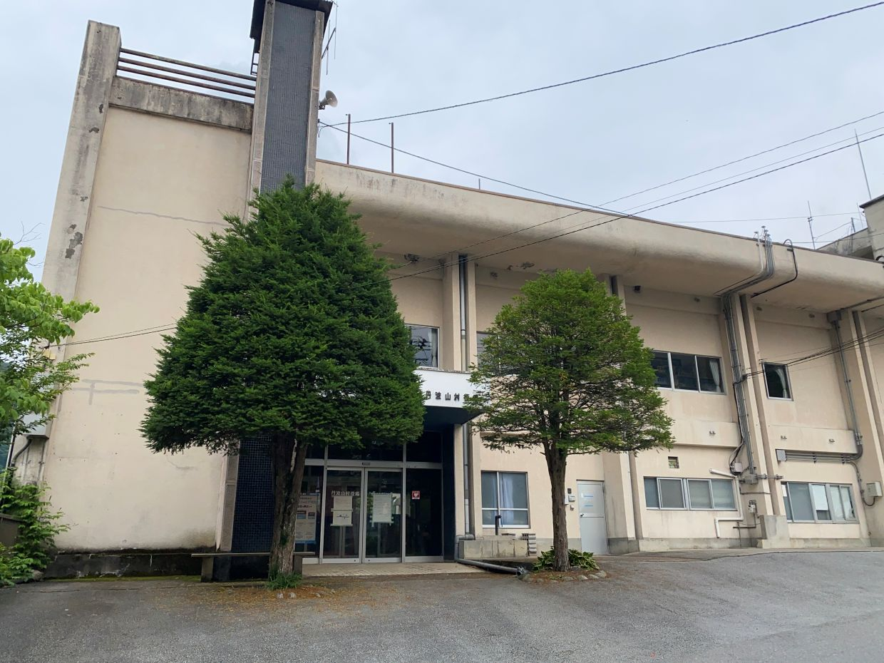

山梨県 丹波山村
役場

東京都と接している山奥の村で、行こうと思わないとまず通らない場所にありますが自然は豊かでかなりの数の人が道の駅に集まっていました。公共交通機関としてのバスが山梨県側に行かず奥多摩に抜けるというのでかなり東京に寄っている場所であると分かります。旧役場に行ったと考えられるのでいずれ再訪します。

東京都と接している山奥の村で、行こうと思わないとまず通らない場所にありますが自然は豊かでかなりの数の人が道の駅に集まっていました。公共交通機関としてのバスが山梨県側に行かず奥多摩に抜けるというのでかなり東京に寄っている場所であると分かります。旧役場に行ったと考えられるのでいずれ再訪します。